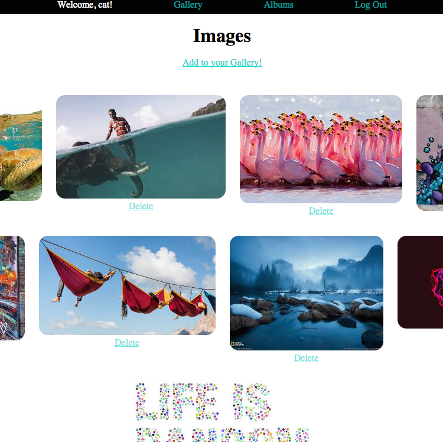

Hello. I'm Eric!
I am looking for a role in blah blah.
Projects
- 


- Picstor
- U.S Election
- The Earth
- An online image sharing application using Ruby On Rails
- An application visualising the current standings regarding the U.S Election using the Betfair API, Backbone.js and Ruby on Rails
- A visualisation of the earth in outer space using Three.js